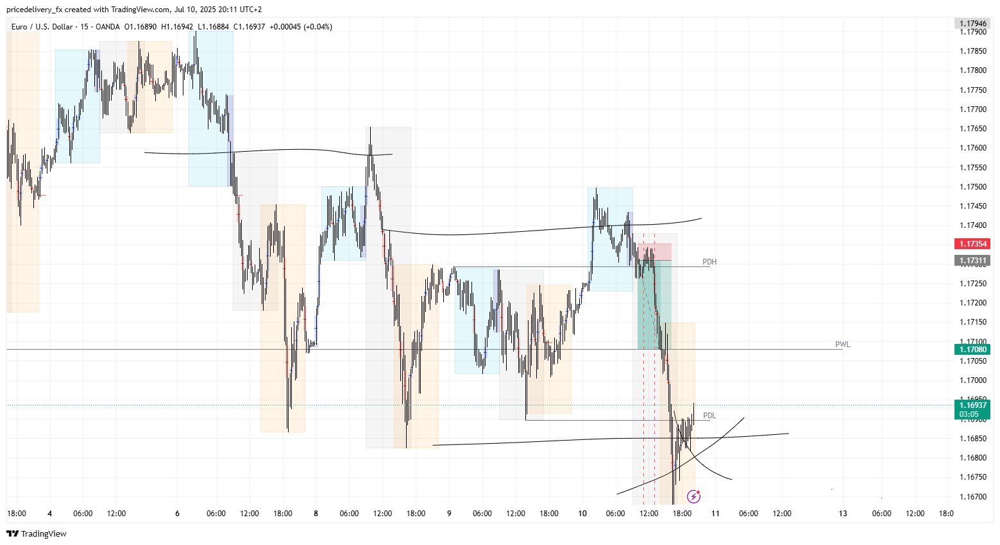

Forex EUR/USD Analytics
Daily insight, strategy, and journal for smart trading
📅 Daily Analytics – 10 July 2025
Market Bias: Despite observing a strong bullish move during the Asian session, the overall market tendency remains bearish on the 1-hour timeframe. This broader context influenced today’s bias. Decision: The strategy was to look for short entries starting from the London Open (LO), aligning with the higher timeframe trend. Confirmation: A solid confirmation was received around the LO session, validating the short setup and supporting the execution of the trade in line with the dominant bearish structure.
Key Zones:
EUR/USD: 1.17581 entry point for short.
DXY: Not reviewed today.
Trade Ideas:
EUR/USD Wait for London Open volatility to sweep a minor intraday high (liquidity grab or inducement). Confirm rejection with a bearish engulfing or break of structure on 5M/15M TF. Enter short after confirmation with tight SL above inducement or structure break.
DXY just observe.
EUR/USD Chart
DXY Chart
🎵 Tune of the day

🎵 My Favorite Vibes
📓 Trading Journal
✔️ July 10: Took EUR/USD short, +5.1R
❌ July 10: No stops
🧠 Reminder: Stick to the idea have a solid direction confirmtion from previous sessions (Asia and Frakfurt). Perform in London having clear target.
Position
📩 Subscribe or Contact Me
Get daily updates or send a message.